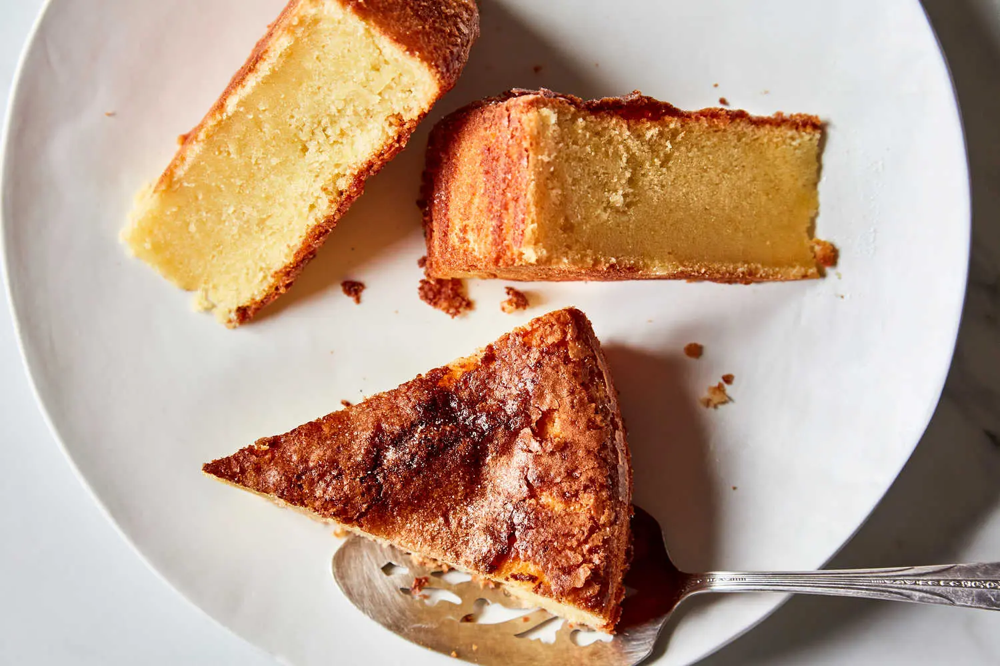

Olive Oil Cake

Description
This simple, lemon-scented olive oil cake is an elegant treat all by itself or topped with whipped cream, fruit or ice cream. The olive oil contributes a pleasant fruity flavor while keeping the cake moister for longer than butter ever could. Make sure your olive oil tastes delicious and fresh. If you wouldn’t eat it on a salad, it won’t be good in your cake.
Ingredients
- Yield: One 9-inch cake
- 1 cup / 240 milliliters good-quality extra-virgin olive oil, plus more for the pan
- 2 cups / 255 grams all-purpose flour, plus more for the pan
- 1 teaspoon kosher salt
- 1 teaspoon baking powder
- ¼ teaspoon baking soda
- 1½ cups / 300 grams granulated sugar, plus about 2 tablespoons for sprinkling
- 3 large eggs, at room temperature
- 1 tablespoon freshly grated lemon zest plus 2 tablespoons fresh lemon juice
- 1¼ cups / 295 milliliters whole milk, at room temperature
Preparation
-
Step 1: Heat the oven to 375°F (190°C). Grease a 9-inch round cake pan using extra-virgin olive oil and line the bottom with parchment paper. Oil the parchment and flour the pan, shaking out any excess flour.
-
Step 2: In a large bowl, whisk together the flour, salt, baking powder, and baking soda.
-
Step 3: In the bowl of an electric mixer set on high, beat the sugar, eggs, and lemon zest until very thick and fluffy, about 5 minutes. With the mixer still running, slowly drizzle in the oil and beat until incorporated, another 2 minutes. Reduce speed to low, and add milk and lemon juice. Gradually add the flour mixture and beat until just combined. Transfer the batter to the prepared pan, smooth the top using an offset spatula, and sprinkle the top with about 2 tablespoons sugar.
-
Step 4: Bake the cake until a skewer inserted into the center comes out clean, 40 to 45 minutes. Transfer to a rack to cool for 20 minutes, then run a knife around the edge to release the sides of the cake from the pan. Invert the cake onto a plate and then flip it back over onto the rack to cool completely. Store leftovers in an airtight container at room temperature for up to one week.